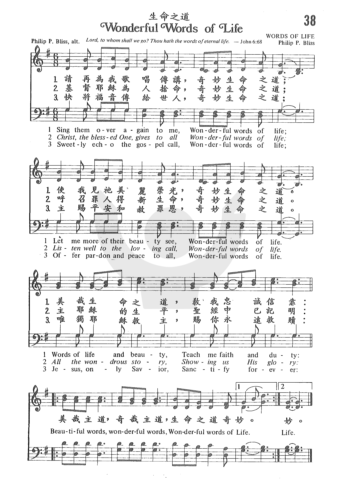

1182 Wonderful Words Of Life 生命之道極奇 NP233
|
|
|
|
1 Sing them over again to me,
Wonderful words of life;
Let me more of their beauty see,
Wonderful words of life;
Words of life and beauty
Teach me faith and duty.
Refrain:
Beautiful words, wonderful words,
Wonderful words of life;
Beautiful words, wonderful words,
Wonderful words of life.
2 Christ, the blessed one, gives to all
Wonderful words of life;
Sinner, list to the loving call,
Wonderful words of life;
All so freely given,
Wooing us to heaven. [Refrain]
3 Sweetly echo the gospel call,
Wonderful words of life;
Offer pardon and peace to all,
Wonderful words of life;
Jesus, only Savior,
Sanctify forever. [Refrain]
|
聖經都是真神言語，證明耶穌基督道，
成肉身釘於十架，流血洗我罪污。
真神應許盡在聖經，備及今世來生是，
我產業成我詩歌，為我暗處明燈。
真神言語滿有能力，主必親自堅立比，
金更寶比蜜更甜，永遠安定在天。
我願天天查考聖經，晝夜思想遵行真，
理聖靈開導我心，使我識主更真。
副歌：生命之道極奇，我今篤信不疑，
美哉主道，奇哉主道，生命之道極奇，
美哉主道，奇哉主道，生命之道極奇。
|
|
https://www.zanmeishige.com/tab/25355.html?songbook=1&index=38

 |
| |
|
Wonderful Words Of Life
生命之道
http://www.xueshengshi.com/?p=1892
简介（一） （来源：《岁首到年终》）
Philip P. Bliss, 1838-1876
你们蒙了重生…… 是借着神活泼常存的道。(彼前1:23)
神的话像两刃的宝剑可以粉碎人的骄傲，使人顺服神；对基督徒而言，神的话更能指正我们、提醒我们。约翰福音8：32「你们必晓得真理，真理必叫你们得以自由。」因此，当我们灵性愈成熟，圣灵就愈容易借着神的话提醒我们，指责我们。而当我们愈明白神的话时，我们愈能脱离许多的辖制，使我们在灵里得以自由。
神的话一生命之道实在奇妙！诗人在最长的诗篇 119 篇里用了一百七十六节，仍然无法透澈述尽其宝贵。让我们昼夜思想吧！
此诗的作者 Philip P. Bliss 是十九世纪后期福音诗歌作家之领导人。经常听道中受感而即兴写作圣诗，其作品大都词与曲同时完成。Philip P.
Bliss 系 1838 年 7 月 9 日宾州 Clearfield 出生。年轻时迁居芝加哥，参与慕廸布道团负责音乐事工。不幸于 1876 年 12 月 29
日，在 Ohio 的 Ashtabula，因火车意外失事而丧生，享年仅 38 岁。

他所写的著名诗歌，今天广泛被使用的例如：「我曾舍命为祢」、「我心灵得安宁」、「歌颂救赎主」、「哈利路亚！奇妙救主」、「你的光当照耀」、「无论何人愿意」等。
1 圣经都是真神言语，证明耶稣基督，
道成肉身被钉十架，流血洗我罪污。
2 真神应许尽在圣经，备及今世来生，
是我产业成我诗歌，为我暗处明灯。
3 我愿天天查考圣经，昼夜思想遵行，
真理圣灵开导我心，使我识主更真。
(副歌)
生命之道极奇，我今笃信不疑，
美哉主道，奇哉主道。
＊熟读上帝的话语，精通上帝的原则，便无须常冒犯错之险。── 马丁路德
https://www.umcdiscipleship.org/resources/history-of-hymns-wonderful-words-of-life
History of Hymns: “Wonderful Words of Life”
BY JACKSON HENRY
“Wonderful Words of Life” (“Sing them over again to me”)
by Philip P. Bliss
The United Methodist Hymnal, 600
Philip P. Bliss
Philip P. Bliss
Sing them over again to me,
Wonderful words of life;
Let me more of their beauty see,
Wonderful words of life;
Words of life and beauty
Teach me faith and duty.
Beautiful words, wonderful words,
Wonderful words of life.
I would wager that many people who have sung this hymn can recall most of the
hymn text in its entirety or, at the very least, the refrain. Clearly, Philip P.
Bliss (1838-1876) knew exactly what he was doing with this text. He used his
background as an educator to influence many generations of singers over the
course of the last century and a half.
Bliss is well known from his work with the evangelistic revival meetings of the
mid-nineteenth century with leaders such as Dwight L. Moody (1837-1899) and
Daniel Webster “Major” Whittle (1840-1901). Bliss and his wife, Lucy, both
joined these revival meetings as singers, leading the songs of what would be
known as the gospel era of hymnody. This genre of hymnody was itself named from
collections Bliss compiled with Ira D. Sankey (1840-1908), with titles such as
Gospel Hymns and Sacred Songs and Gospel Hymns No. 2. The Blisses defined the
era with a life on the road as traveling evangelists with their colleagues for
many years to come. Most of these worship services took place in the midwestern
and the southern United States, and they served as the framework within which
Bliss wrote his hymn texts and tunes.
Before these evangelistic endeavors, however, Bliss had an interesting life as a
child and young adult. Born in Pennsylvania, the industrious boy spent his early
years working and learning, and he received training in music from teachers such
as William B. Bradbury (1816-1868), whose well-known tunes include JESUS LOVES
ME and HE LEADETH ME. Bliss eventually took on the roles of itinerant music
teacher, composer, and editor.
One can assume his training included the pedagogical tools needed to teach music
in the nineteenth century, and it is evident this experience influenced his work
as a composer and enlivener of the people’s song in worship. Bliss would have
taught many of his songs in these revival meetings by rote, and “Wonderful Words
of Life” is filled with examples of repetition. Though the second line differs
from the first by only one note (the final note), it is almost an exact
statement of the initial phrase. The third line contains two two-measure phrases
that are exactly the same, and the refrain contains two phrases written almost
note for note. The final musical form then becomes AA’ BB CC’.
In addition, the “wonderful words” themselves become a teaching tool that are
deeply rooted in the ear, voice, and mind of the singer. The phrase “wonderful
words” is repeated throughout this hymn a total of eighteen times, and the
larger phrase “wonderful words of life,” a total of twelve times! He uses means
other than repetition to reinforce the teaching of the text and tune.
The poetic devices he employs also help to teach the hymn. “Words” is
personified throughout the hymn as teachers “wooing us to heaven” and “offering
pardon and peace to all.” Bliss’s creative use of alliteration is also very
prominent throughout, with a strong “w” sound adding to the overall
rocking character of the 6/8 tune. These poetic devices were carefully
chosen because they all add to the narrative of the text and the singability of
the tune.
As the revivalist song leader, Bliss was obviously emphasizing the words of
Scripture and the subsequent “gospel call” that results from the hearing of
these words. The singing itself becomes the persuasive sermon as the text is
directed toward a listener, the “sinner,” and the sermon concludes with the
following simple prayer:
Jesus, only Savior,
Sanctify forever.
It is no surprise, then, that this hymn is included in Methodist collections, as
the themes of holiness and sanctification appear at the end of the third stanza.
If only Bliss could have written more texts and tunes, it is certain they would
have appeared in United Methodist collections and others within the global
church. His life was cut short at age 38 as he and Lucy were involved in a train
wreck near Ashtabula, Ohio, on their way to Chicago to assist in evangelistic
services led by “Major Whittle.” According to The Canterbury Dictionary of
Hymnology, “It is believed that Bliss escaped the crash, but the carriages
caught fire and he returned to try to save his wife” (JRW, “Philip P. Bliss”).
Even the last moments of his life served as an example of one who followed the
“gospel call.” As one learned in and devoted to “faith and duty,” Bliss spent
his last efforts helping his wife, Lucy.
May the singing of these “wonderful words” be a reminder of the power of words,
the Spirit moving through their proclamation, and the call of Christ.
FOR FURTHER READING:
JRW. "Philip P. Bliss." The Canterbury Dictionary of Hymnology. Canterbury
Press, accessed June 7, 2017,
http://www.hymnology.co.uk/p/philip-p-bliss.
https://wordwisehymns.com/2011/06/06/wonderful-words-of-life/
Words: Philip Paul Bliss (b. July 9, 1838; d. Dec. 29, 1876)
Music: Philip Paul Bliss
Links:
Wordwise Hymns (and see here)
The Cyber Hymnal
Note: The two Wordwise Hymns links have to do with the birth of Mr. Bliss, and
that of his tragic death, respectively. In spite of the shortness of his life,
Philip Bliss is one of the most important and influential gospel song writers of
the nineteenth century.
On one occasion, Christian publisher Fleming H. Revell (Dwight Moody’s
brother-in-law) was about to launch a new Sunday School paper. He wanted a song
that would capture the overall focus of the publication, which was to emphasize
the vital importance of studying the Word of God.
The name of the paper was to be Words of Life. So Mr. Revell asked Philip Bliss
if he could come up with a song to fit, suggesting the key text, John
6:67-68. In the passage, many who had followed Christ were drifting away
(vs. 66). The Lord turned to His disciples and asked, “Do you also want to go
away?” And Peter made this reply on behalf of the other men:
Lord, to whom shall we go? You have the words of eternal life” (cf. Jn. 5:24).
Words of eternal life…words of life. That is an apt description of the whole
Bible.
“Man shall not live by bread alone, but by every word that proceeds from the
mouth of God” (Matt. 4:4). And as Hebrews declares,
“The word of God is living and powerful” (Heb. 4:12; cf. I Thess. 2:13).
“[God’s] word is a lamp to [our] feet and a light to [our] path” (Ps. 119:105).
In the keeping of its principles and precepts
“there is great reward” (Ps. 19:11).
Mr. Bliss duly produced a song, as requested, calling it Wonderful Words of
Life.
Sing them over again to me, wonderful words of life,
Let me more of their beauty see, wonderful words of life;
Words of life and beauty teach me faith and duty.
Beautiful words, wonderful words,
Wonderful words of life;
Beautiful words, wonderful words,
Wonderful words of life.
Stanza CH-2 ties in the Scripture suggested by Fleming Revell with, “Christ, the
blessèd One, gives to all wonderful words of life.” And the responsibility not
only to know God’s Word, but to share it with others, is reflected in CH-3 (cf.
I Pet. 3:15).
Sweetly echo the gospel call, wonderful words of life;
Offer pardon and peace to all, wonderful words of life.
It’s a simple song. And after it served its purpose, in the first issue of the
publication, it was all but forgotten. But Mr. Revell passed on a copy of the
Sunday School paper to another hymn writer, George Stebbins. Mr. Stebbins began
using Philip Bliss’s song in evangelistic meetings, with he and his wife Elma
singing it as a duet. It caught on, after that, and became very popular. Simple
though it is, it reminds us that we have a precious treasure in the
Scriptures–words of life.
Questions:
1) The “life” often spoken of in the Bible is spiritual and eternal life. But
living according to God’s Word can transform our mortal lives here and now, too.
In what ways?
2) Bliss asks, concerning the Scriptures, “let me more of their beauty see.” In
what way is the Word of God “beautiful”?
https://hymnstudiesblog.wordpress.com/2015/07/20/wonderful-words-of-life/

(picture of Philip P. Bliss)
“WONDERFUL WORDS OF LIFE”
“Lord, to whom shall we go? Thou hast the words of eternal life” (John
6:68)
INTRO.:
A song which mentions the blessings that we can find in God’s word of life is
“Wonderful Words of Life” (#405 in Hymns
for Worship Revised, #13 in Sacred
Selections for the Church). The text was written and the tune (Words of
Life) was composed both by Philip Paul Bliss, who was born in a log cabin near
Rome in Clearfield County, PA, on July 9, 1838. Always interested in music,
while a boy he was carrying items from his family’s home into town to sell and
heard a lady playing the piano in a house along the way. Walking into the
house without her knowledge, he asked her to play some more but was ordered to
leave. His family was poor, and at age eleven he left home to work on farms
and in lumber camps. The following year he joined the Baptist Church at Elk
Run, PA, and began studying music. His first instruction was under J. G.
Towner. Also, he attended a music convention conducted by William B.
Bradbury. Then in 1859 he married Lucy J. Young of Rome, PA, and for a year
afterward worked on her father’s farm. Beginning in 1860, with the help of
his horse, Old Fanny, a ramshackle buggy, and a $20 melodeon, he rode about
rural Pennsylvania as a professional music teacher, conducting singing schools
in the winter and continuing his own music education during the summers at the
Normal Academy of Music at Geneseo, NY, conducted by Theodore E. Perkins and
others. In 1864, at age 26, he wrote his first song, “Lora Vale,” and sold it
to the famous Chicago, IL, publishing firm of Root and Cady.
This song was such a hit that the company induced him to come to the Windy
City where he held music conventions and gave concerts. While associated with
Root and Cady for four years, he cared little for popular music. Wanting to
write hymns, his association with two Chicago evangelists caused him to give
up his music teaching and to begin composing gospel songs for their crusades.
One of these evangelists was Dwight L. Moody, and the other, for whom Bliss
became music director, was Daniel Webster Whittle. Over the next eight years,
Bliss became one of the foremost gospel musicians in the nation. One night he
heard Moody tell the story of a shipwreck and wrote “Let the Lower Lights Be
Burning.” On another occasion he listened to Whittle speak of a battle during
the Civil War and wrote “Hold the Fort.” While on a stopover in an eastern
town during a train trip, he attended a church service where the preacher
discussed Paul’s interview with Agrippa and as a result wrote “Almost
Persuaded” (#348). Furnishing many songs for various collections of others,
he went on to publish several hymnbooks of his own. Some of his other
well-known hymns which have appeared in books published by members of the
Lord’s church include “Hallelujah! What A Savior!”, “More Holiness Give Me,”
“Whosoever Will,” “Once For All,” Hallelujah, ‘Tis Done,” “Dare to Be a
Daniel,” “The Light of the World is Jesus,” and “Jesus Loves Even Me;” tunes
for Francis R. Havergal’s “I Gave My Life For Thee” and “I Bring My Sins to
Thee,” Emily Oakley’s “What Shall the Harvest Be?”, Mary Brainard’s “He
Knows,” and Horatio G. Spafford’s “It Is Well With My Soul;” and the text for
“My Redeemer” with music provided by James G. McGranahan.
While at age 25 Bliss had been an impoverished music teacher making only $13 a
month, by 36 he was earning a fortune with his royalties being counted in the
tens of thousands of dollars, although he gave much of it away to charity.
“Wonderful Words of Life” was produced in 1874 for the first issue of a
religious paper named Words
of Life, published by Fleming H. Revell in New York City, NY. Two years
later, in 1876, after a grueling fall schedule, Mr. and Mrs. Bliss spent the
Christmas holiday with their family in Rome, PA. Leaving the children with
relatives in Rome, they left for Chicago and an engagement at Moody’s
tabernacle. On Dec. 29, while they were riding their Chicago-bound express
through Ohio, the bridge over a ravine near Ashtabula gave way, and seven cars
crashed through the trestle. They plunged into the icy riverbed below and
burst into flame. Bliss, just 38 years old at the time, survived the fall,
escaped through a window, and crawled from the wreckage. However, when he did
not see his wife, he fought his way back through the fire into the burning
mass in a vain effort to locate and rescue her. Both of them perished in the
flames, along with a hundred other people. This song had its first hymnbook
appearance in the 1878 Gospel
Hymns No. 3, edited by Ira David Sankey.
Among hymnbooks published by members of the Lord’s church for use in churches
of Christ, the song has appeared in the 1921 Great
Songs of the Church (No. 1) and the 1937 Great
Songs of the Church No. 2 edited by E. L. Jorgenson; the 1935 Christian
Hymns (No. 1), the 1948 Christian
Hymns No. 2, and the 1966 Christian
Hymns No. 3 all edited by L. O. Sanderson; the 1959 Majestic
Hymnal No. 2 and the 1978 Hymns
of Praise both edited by Reuel Lemmons; the 1963 Christian
Hymnal edited by J. Nelson Slater; the 1963 Abiding
Hymns edited by Robert C. Welch; the 1965 Great
Christian Hymnal No. 2 edited by Tillit S. Teddlie; the 1971 Songs
of the Church, the 1990 Songs
of the Church 21st C.
Ed., and the 1994 Songs
of Faith and Praise all edited by Alton H. Howard; the 1978/1983 Church
Gospel Songs and Hymns edited by V. E. Howard; the 1986 Great
Songs Revised edited by Forrest M. McCann; the 1992 Praise
for the Lord edited by John P. Wiegand; the 2007 Sacred
Songs of the Church edited by William D. Jeffcoat; the 2009 Favorite
Songs of the Church and the 2010 Songs
for Worship and Praise both edited by Robert J. Taylor Jr.; and the 2012 Psalms,
Hymns, and Spiritual Songs edited by Steve Wolfgang et. al.; in addition
to Hymns
for Worship and Sacred
Selections.
The song emphasizes the importance of God’s words of life and why they is so
wonderful.
I. According to stanza 1, they teach faith and duty
Sing them over again to me,
Wonderful words of life,
Let me more of their beauty see,
Wonderful words of life;
Words of life and beauty
Teach me faith and duty.
-
We need to hear God’s words over and over again: 2 Pet. 3:1-2
-
When we do, their beauty will be seen in that they are sweeter than honey:
Ps. 119:103
-
And their value is that they teach us faith and duty: Tit. 2:11-12
II. According to stanza 2, they woo us to heaven
Christ, the blessèd One, gives to all
Wonderful words of life;
Sinner, list to the loving call,
Wonderful words of life;
All so freely given,
Wooing us to heaven.
-
Christ is the one who gives us these wonderful words: Jn. 6:63
-
Therefore, we need to listen to His loving call: 2 Thess. 2:13-14
-
If we follow them, they will woo us to heaven: Col. 1:5
III. According to stanza 3, they present Jesus as Savior
Sweetly echo the Gospel call,
Wonderful words of life;
Offer pardon and peace to all,
Wonderful words of life;
Jesus, only Savior,
Sanctify forever.
-
The gospel is God’s power unto salvation: Rom. 1:16
-
The gospel offers pardon and peace through forgiveness of sins: Acts
13:38-39
-
But we must respond to the gospel in obedience because Jesus is the only
Savior: Heb. 5:8-9
CONCL.: The refrain continues the note of praise for the word of God:
Beautiful words,
Wonderful words,
Wonderful words of life,
Beautiful words,
Wonderful words,
Wonderful words of life.
Note Matt. 4:4. We can have guidance through life, the hope of heaven, and
salvation in Christ only by believing and obeying the “Wonderful Words of
Life.”
https://wonderfulwordsoflifebyshazinoz.blogspot.com/2019/01/wonderful-words-of-life-phillip-bliss.html?showComment=1547623333019
This new blog is another learning curve. I wasn’t sure what the
LORD was doing when I started this blog!
Knew it was to share the word of God with as many as able; the
format was hazy. After prayer and thought I believe this is good
balance:
** one post on LORD’s day will be deeper, a Devotional Bible study
of some sort.
As I’m in Oz it will probably publish on your Saturday in Europe
or US.
** second post about mid week will be a shorter or easier to read
post.
A hymn background or short biography for uplifting encouragement.
Love the way biographies can help us refocus! That’s why I read a dozen
of them for one novel. Novels may be good BUT you can’t beat real life
stories from those who've gone before.
Philip Bliss. Hymn writer*
The composer and writer of the hymn (& title of this blog),
“Wonderful Words of life” was Philip Bliss. He wrote many hymns,
composed the music to many more, yet his time of writing was very short.
Rather like the Apostle Stephen his life was cut off prematurely to our
limited, human eye.
“Wonderful
Words of Life”*
“Lord, to whom shall we go? Thou hast the words of eternal life” (John
6:68)
INTRO.: A
song which mentions the blessings that we can find in God’s word of
life is “Wonderful Words of Life” The
text was written and the tune (Words of Life) was composed both by
Philip Paul Bliss, who was born in a log cabin near Rome in
Clearfield County, PA, on July 9, 1838. He had a limited access to
musical training but by using every opportunity God brought his way
and much hard work he aquired good training.
He rode about rural Pennsylvania as a professional music teacher,
conducting singing schools in the winter and continuing his own
music education during the summers at the Normal Academy of Music at
Geneseo, NY.
Wanting to write hymns, his association with two Chicago evangelists
caused him to give up his music teaching and to begin composing
gospel songs for their crusades. One of these evangelists was
Dwight L. Moody, and the other, for whom Bliss became music
director, was Daniel Webster Whittle. Over the next eight years,
Bliss became one of the foremost gospel musicians in the nation. He
wrote “Let the Lower Lights Be Burning.” “Hold the Fort." “Almost
Persuaded” et al. Furnishing many songs for various collections of
others, he went on to publish several hymnbooks of his own. Some of
his other well-known hymns “Hallelujah! What A Savior!”, “More
Holiness Give Me,” “Whosoever Will,” “Once For All,” Hallelujah,
‘Tis Done,” “Dare to Be a Daniel,” “The Light of the World is
Jesus,” and “Jesus Loves Even Me;”; tunes for Francis R. Havergal’s
“I Gave My Life For Thee” and “I Bring My Sins to Thee,” Emily
Oakley’s “What Shall the Harvest Be?”, Mary Brainard’s “He Knows,”
and Horatio G. Spafford’s “It Is Well With My Soul;” and the text
for “My Redeemer” with music provided by James G. McGranahan.
While at age 25 Bliss had been an impoverished music teacher making
only $13 a month, by 36 he was earning a fortune with his royalties
being counted in the tens of thousands of dollars, although he gave
much of it away to charity.
 |
|
Sketch of Philip Bliss. |
“Wonderful Words of Life” was produced in 1874 for the first issue
of a religious paper named Words
of Life,
published by Fleming H. Revell in New York City, NY.
Two years later, in 1876, after a grueling autumn or fall schedule,
Mr. and Mrs. Bliss spent the Christmas holiday with their family in
Rome, PA. Leaving the children with relatives in Rome, they left
for Chicago and an engagement at Moody’s tabernacle. On Dec. 29,
while they were riding their Chicago-bound express through Ohio, the
bridge over a ravine near Ashtabula gave way, and seven cars crashed
through the trestle. They plunged into the icy riverbed below and
burst into flame. Bliss, just 38 years old at the time, survived
the fall, escaped through a window, and crawled from the wreckage.
However, when he did not see his wife, he fought his way back
through the fire into the burning mass in a vain effort to locate
and rescue her. Both of them perished in the flames, along with a
hundred other people. This song had its first hymnbook appearance
in the 1878 Gospel
Hymns No. 3.